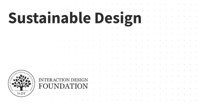
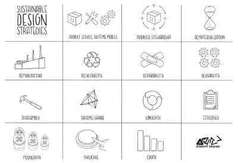
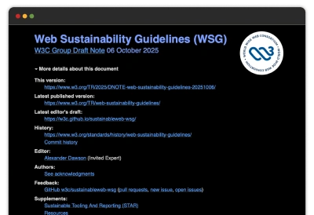
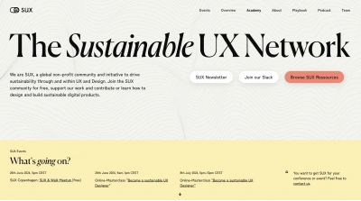
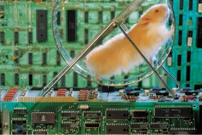
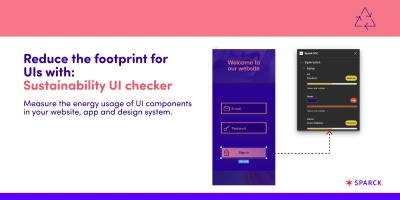
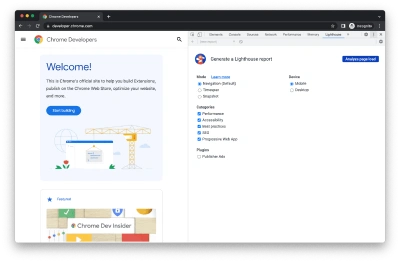

Sustainability
Sustainable design creates long-term solutions and helps societies ensure the well-being of their people and harmony with the environment for generations.
Introduction to sustainable design from Don Norman | Interaction Design Foundation

An introduction for all types of design. Be sure to look at the sections focusing on digital and UX design.
Quick Guide to Sustainable Design Strategies

Focused on physical products - but many principles can still be applied to digital design and what we prioritize within our work.
W3C Sustainability Guides

Not the most exciting resource you're going to find - but this is a wonderfully comprehensive, and pragmatic, set of guidance around bringing a sustainability lens to your design work. As authoritative as you'd expect from W3C
Sustainabilty UX network | resources, events and community

A global non-profit community and initiative to drive sustainability through and within UX and Design. Join the SUX community to learn how to design and build sustainable digital products.
Sustainability case study

Real world example of reducing a website's energy consumption.
UI sustainability plugin for Figma

See the energy consumption of your colour palettes in Figma.
How LCD and OLED screens work
If using the Figma plugin - a further understanding of how LCD and OLED screens work will be helpful to you. This discussion explains the differences between them in calculating energy usage in rendering different colours.
Google Lighthouse

Not intended as a sustainability tool, but many metrics for improving page load times will result in fewer files downloaded and smaller overall file sizes, thus naturally reducing the energy consumption of your website. A great starting point for improving user experience as well as sustainability of your website - with demonstrable metrics.